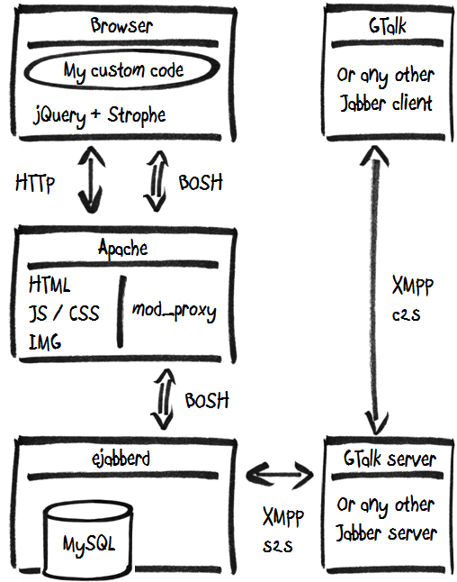

Faye é um servidor PubSub com implementações em Node.js e Ruby, com cliente em javascript
The eXtensible Messaging and Presence Protocol
zentrale.com.br
gustavo@zentrale.com.br/home
equipe@conference.zentrale.com.br
<presence/>
<presence type=’unavailable’/>
<presence>
<show>away</show>
<status>@ GURU Sorocaba</status>
</presence>
<message from=’gustavo@zentrale.com.br/home’
to=’equipe@conference.zentrale.com.br’
type=’groupchat’>
<body>Chunky bacon!</body>
</message>
<iq from=’gustavo@zentrale.com.br/home’
type=’get’
id='3423d5f'>
<query xmlns='jabber:iq:roster' />
</iq>
<iq to=’gustavo@zentrale.com.br/home’
type=’result’
id='3423d5f'>
<query xmlns='jabber:iq:roster'>
<item jid='danilo@zentrale.com.br' name='Danilo' />
</query>
</iq>
Biidirectional-streams Over Synchronous HTTP
browser + desktop client
ruby client(bot) + browser